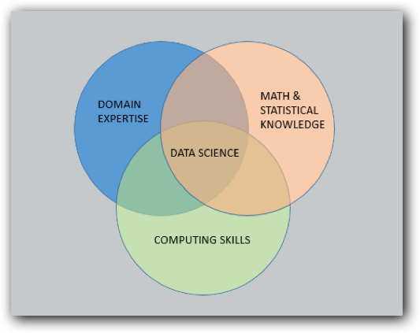
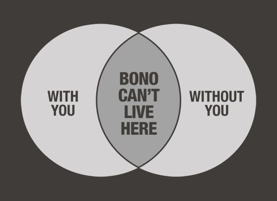
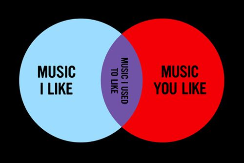
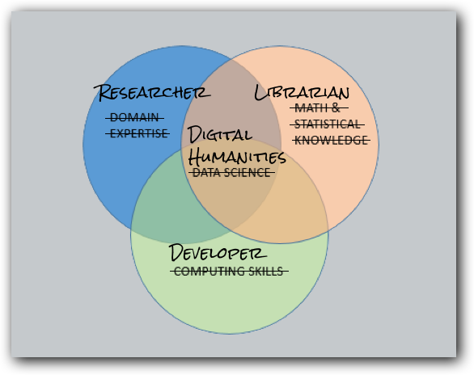

The Policy of Collaboration and Inclusion
Derek Who?
Associate What?
- Publishing arm for educational content
- Case studies and the case method
- Responsible for content standards and content production
- Intelligent and Flexible Content
- Accessibile content
so...
- Machine Readable Documents
- XML standards
- Manage software development (not a developer)
- Content equally accessible to all audiences
Classic Data Science Venn Diagram
digital projects are team sports.
We can easily imagine how this classic data science Venn diagram can be applied to DH projects. We can think about identifying where these spaces exist in our own cotnext/environments
Bono Venn Diagram
Hipster Venn Diagram
Imagine our own Venn Diagram
We want to focus on the grey areas, the regions that overlap because this is where the interesting things happen.
Project: H2O
A project to make teaching case law accessible to faculty and students outside Harvard Law, and reduce cost of teaching/learning texts to students and make texts digital.
- Educators -> Content
- Library -> Metadata, digitization, coordination
- Software Developent -> platform and maitenance
Put it online and everybody can use it...
...Not Quite.
How do you use your cell phone with mittens on?
Approximately 1 in 5 people have some dissability and it is likely that we will all be affected by disability at some point in our lives.
Imagine creating a resource that was available to one of every five students in a classroom. Or a platform in which one out of every five people were not allowed to use. Unheard of!? But we do.
Occasions of disability
- permanent
- situational
- contextual
Different types of disability
- Visibiliy
- Mobility
- Cognition
- Auditory
- Speech
Inclusive Design
This is not a question of addressing the edge case but improving the usability
Inclusive design means:
- overall improved UX and UI
- broader adoption and acceptance
- reflects a commitment to democratic principals and equality
- It's the law (European Union (EU) Directive on the Accessibility of Websites and Mobile Applications, ADA - Section 508).
- computers can understand the content